Kenrith is a toolbox, not a reason to spend every turn reanimating the same creature. Establish mana and an independent draw source, then choose between interaction, counters, theft, token pressure, and recovery. The black ability is a fallback when a useful creature dies; the deck does not need a stocked graveyard to operate.
Choose the job before spending the mana
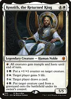
Kenrith, the Returned King

the red ability gives ALL creatures haste and trample, including opponents' creatures. Green places a counter on any target creature; white gives any target player five life; blue draws a card for any target player. Black returns a creature under its OWNER'S control, so it does not steal an opponent's creature from a graveyard.
You do not need all five colors to cast Kenrith: his mana cost is four generic and one white, and he is a white permanent. Develop green for ramp, blue for draw and counters, and white for Kenrith and protection; find black and red when their specific tools are needed. Do not count Kenrith's five-color identity as five colors for a mana creature.
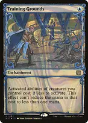
+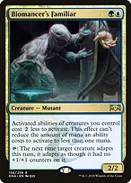
Training Grounds + Biomancer's Familiarreduce the generic costs of creature abilities. One two-mana reducer makes Kenrith's green ability cost G, lifegain cost W, draw cost 1U, and reanimation cost 2B. With both, draw reaches U and reanimation reaches B. Colored mana requirements remain.
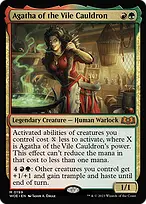
Agatha of the Vile Cauldron

growing her with Kenrith or Bill increases the discount on your creature abilities. She can also pump other creatures and grant haste and trample when Kenrith is unavailable. Her discount does not help noncreature permanents.
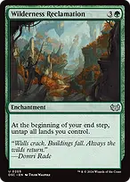
Wilderness Reclamation
untaps your lands during your end step after a productive main phase. Float mana before the trigger resolves if you want to combine it with mana from the newly untapped lands in the same end step. It does not untap your mana creatures or Shorikai.
Build mana that also supports the rest of the deck
 +
+
Birds of Paradise + Delighted Halflingearly acceleration fixes Kenrith and your engines. Halfling's colored mana is limited to legendary spells and cannot pay Kenrith's activated abilities; its colorless mode can pay generic activation costs.
 +
+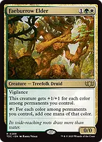
Bloom Tender + Faeburrow Eldercount the actual colors of your permanents. Kenrith contributes white, Agatha contributes red and green, and Familiar contributes green and blue. Neither mana creature automatically produces five colors just because your commander has a five-color identity.
 +
+Incubation Druid + Kenrith, the Returned Kinggive Druid one counter with Kenrith instead of paying its five-mana adapt cost. It then taps for three mana of a single type one of your lands could produce. Kenrith can grant it haste, but the counter activation and haste still need mana before it starts producing.
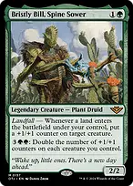
+Bristly Bill, Spine Sower + Incubation Druida landfall counter activates Druid's three-mana mode without Kenrith. Fetchlands provide two separate landfall events, letting the second counter go onto Bill, Agatha, or another relevant creature.
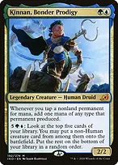
Kinnan, Bonder Prodigy
adds one extra mana whenever you tap a nonland permanent for mana. Druid's three becomes four, Sol Ring's two becomes three, and Waterskin can produce two each turn it untaps. Kinnan does not add one per mana already produced and does not double lands or Smothering Tithe's token creation.

Bender's Waterskinrefreshes itself on each opponent's untap step even without Muse, providing colored mana for interaction or discounted abilities. Muse and Waterskin do not produce two separate usable untaps during the same untap step.
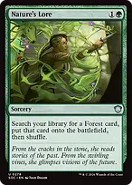
+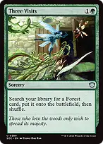
+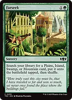
Nature's Lore + Three Visits + Farseeksecure missing colors with typed dual lands. Lore and Visits find Forest cards; Farseek finds an appropriate Plains, Island, Swamp, or Mountain card and puts it in tapped. The dual-heavy manabase supplies typed targets without relying on basic lands of every color.
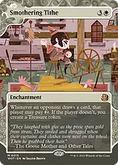
Smothering Tithestores colored mana across turns and leaves your lands available to answer threats. Opponents can pay two to deny each Treasure. Kinnan improves a Treasure's mana activation if present, but does not make extra Treasure tokens.
Keep drawing without a reanimation engine
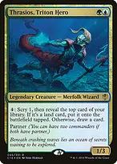
Thrasios, Triton Heroturns spare generic mana into lands or cards with no need for Kenrith. Creature reducers make the ability efficient, but the minimum cost is still one mana. Lands put onto the battlefield this way trigger Bill and Tracker even though they were not played from hand.
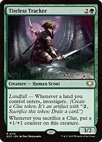
Tireless Tracker
converts land drops and fetchlands into Clues, then grows as you sacrifice those Clues. This supplies cards and a larger attacker without needing opponents to search or a creature in the graveyard. Zirda discounts a Clue activation to one mana; creature-only reducers do not.

Esper SentinelKenrith's counters, Bill, and Wake can increase its power, making opponents' payment harder. It triggers on each opponent's first noncreature spell each turn, not every spell.
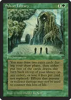
+
Sylvan Library + Mystic Remoraefficient independent access to cards while you assemble mana. Pay Library's life cost only when the additional cards matter; let Remora expire when its upkeep costs more than the expected benefit. Kenrith's lifegain can replenish life later, but still costs mana.
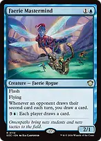
+
Faerie Mastermind + Loran of the Third PathMastermind rewards opposing second draws, while Loran selectively shares a draw after removing an artifact or enchantment. Use the additional cards as bargaining tools only when the recipient is unlikely to win from them. Mastermind's activated ability draws for everyone.
Make counters do more than increase damage
Bristly Bill, Spine Sower
landfall seeds counters, and his activated ability doubles counters on every creature you control. Creature reducers remove the generic portion but never the GG. Double counters to grow a threatening board, amplify Agatha, or stock Ballista; this is finite growth paid for with mana.
Willbreaker + Kenrith, the Returned Kingtarget an opposing creature with Kenrith's green ability. Willbreaker's trigger resolves first and takes the creature, then Kenrith adds the counter. You keep it only for as long as you control Willbreaker; protect that fragile link before committing to a stolen army.
+
Willbreaker + Bristly Bill, Spine Soweraim Bill's landfall counter at an opposing creature to take it without paying a Kenrith activation. Hexproof, shroud, and relevant protection can prevent targeting. This is a temporary control relationship tied to Willbreaker, not permanent ownership.
+
Zirda, the Dawnwaker + WillbreakerZirda's one-mana tap ability can target an opposing creature and trigger the theft. That creature also cannot block for the rest of the turn, so use Kenrith's counter ability instead when you want the stolen creature available as a blocker.
 +
+Glen Elendra Archmage + Kenrith, the Returned Kingsacrifice Archmage for U to counter a noncreature spell, then let persist return it with a -1/-1 counter. Kenrith's green counter cancels that counter through state-based actions, enabling another persist return later. This uses mana for every cycle and only counters noncreature spells; it is not a free universal lock.
Use answers appropriate to the threat

Soul-Guide Lanterna one-mana safety valve against graveyard combos when Ooze would require too many activations. Sacrificing it exiles opponents' graveyards while preserving yours. Do not sacrifice it for a card if an opponent is about to use the graveyard to win.
 +
+
Swords to Plowshares + Path to Exileefficient exile for creatures you cannot safely steal or leave in a graveyard. The controller's compensation is usually preferable to letting a winning creature remain.
Anguished Unmaking + Assassin's Trophy + Generous Giftbroad permanent removal that covers artifacts, enchantments, planeswalkers, and creatures. Trophy and Gift can also answer a specific problematic land; this is targeted interaction, not a mass land-denial plan.
Arcane Denial + Dovin's Veto + Swan Songefficient stack interaction preserves enough mana for development. Use Veto for a crucial noncreature spell, Song when its restricted card types fit, and Denial when you need to stop a creature spell as well. They do not counter activated abilities.
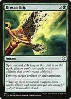
Krosan Gripclears an artifact or enchantment that shuts off activations or threatens a win. Split second does not suppress mana abilities or triggered abilities, but prevents ordinary spell and nonmana-ability responses while Grip is on the stack.
Profane Procession has no tap cost on its front. With enough mana, hold priority and stack additional activations before one transforms it; already-pending activations can still exile their targets. Tokens do not count as captured cards. Commanders moved out of exile are not available to steal later, and the transformed land has a finite supply of captured creatures. Muse can untap the land on opponents' turns.
 +
+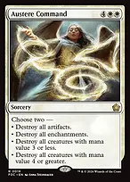
Toxic Deluge + Austere Commandreset a losing board when individual answers are insufficient. Deluge also kills your dorks and reducers, while Command's selected modes can hit your own artifacts or enchantments. Keep lands and independent draw where possible so the reset does not leave you unable to rebuild.
Finish with the battlefield you have built
+
Koma, Cosmos Serpent + Kenrith, the Returned KingCoil production supplies an army while Kenrith supplies haste and trample. Koma also works with Kenrith absent, making it a useful threat to cast directly instead of a dedicated reanimation target. Its indestructibility option does not stop exile or sacrifice.
 +
+Walking Ballista + Bristly Bill, Spine Sowerseed Ballista with counters, double them across available mana windows, then remove counters for direct damage. Kenrith can add a counter for as little as G with a reducer. Without Wake's anthem or another toughness boost, do not remove the final counter until you are ready for Ballista to die.
+ Willbreaker + Walking Ballistatarget an opposing creature with a one-damage activation to take it before the damage resolves. Choose a creature that survives the damage. This spends a counter each time, and removing Willbreaker returns the creatures; it is not free permanent theft. Ballista returned by Kenrith normally dies immediately with zero counters unless another effect already gives it sufficient toughness.
Protect the engine that matters now
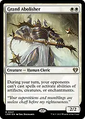
+
Grand Abolisher + Kutzil, Malamet Exemplarmake your own turn safer when committing to a tutor, theft sequence, or lethal attack. Abolisher also restricts opponents' activated abilities from artifacts, creatures, and enchantments. Neither protects you during opponents' turns, and neither stops all triggered abilities.
 +
+
Heroic Intervention + Veil of Summerinexpensive protection lets you continue developing without abandoning interaction. Intervention does not stop exile sweepers, sacrifice, or toughness reduction; Veil's hexproof concerns blue and black and does not stop an untargeted overloaded spell.
 +
+
Clever Concealment + Teferi's Protectionphase out key permanents through threats that indestructibility cannot solve. Your tokens can convoke Concealment, including newly created tokens, but phased-out engines are unavailable until they return. Concealment cannot phase out lands; Protection also preserves your life total until your next turn.
Kenrith's black activation recovers a lost Muse, reducer, or utility creature when useful. Avoid holding expensive creatures in hand waiting for them to die or filling the graveyard just to activate it. Against graveyard hate, continue with mana, counters, theft, draw, and combat rather than treating the deck as switched off.
Tutors are decisions, not a fixed reanimation script
 →
→Eladamri's Call → Seedborn Musefind the untapper when you have mana sources and an ability worth using each turn. If mana production itself is weak, Incubation Druid or Kinnan may be a more useful first target.
 →
→
Formidable Speaker → Shalai, Voice of Plentyfind protection for an engine that is otherwise exposed to targeted removal. Speaker requires discarding a card to tutor; discard a redundant card, not a mandatory reanimation target. The found creature goes to hand.
→ Formidable Speaker → Willbreakerfind theft when opponents have creatures worth taking and you already have a targeting ability. Without that setup, prefer an independent threat such as Koma or a mana engine.
 →
→Chord of Calling → Glen Elendra Archmageput a counterspell creature onto the battlefield at instant speed, but leave U to activate it. You can cast Chord in response to the spell you need to counter. Only green creatures can convoke its green pips, and a creature used for convoke cannot also tap for mana to pay for the same spell.
→
Chord of Calling → Scavenging Oozefetch graveyard interaction in response to a recursion spell, leaving G for the exile activation. If you spend every available mana on Chord, finding Ooze does not itself exile the target.
 →
→Finale of Devastation → Koma, Cosmos Serpenta mana-rich line when you need a standalone board engine. Koma costs X=7 here, making Finale nine mana; casting Koma from hand is cheaper, so this is access to the threat rather than a way to cheat its cost.
Kinnan, Bonder Prodigyhis discounted top-five activation can find non-Human creatures such as Muse, Incubation Druid, Shalai, Glen Elendra Archmage, or Koma. It can miss, and it cannot put Humans such as Kenrith, Willbreaker, Adeline, or Tracker into play. Check the actual creature type before relying on a hit.
Opening hands and sequencing
Keep three usable lands, early ramp, and either an inexpensive answer or a draw engine. A strong example is Command Tower, Savannah, Underground Sea, Birds of Paradise, Nature's Lore, Esper Sentinel, and Swords to Plowshares. Mulligan hands with several five-mana engines and no way to deploy them, even if they have all five colors.
Develop green mana first, then the colors of the actual spells in hand. Deploy a mana creature or land ramp before loading the board with reducers. Kenrith need not be the first five-mana play: Muse may provide more immediate value if you already have Shorikai or Thrasios active, while a pressured board may require removal instead.
With Seedborn Muse, budget each opponent's turn separately. Preserve the colored mana for an urgent answer, then use surplus mana before the next untap on draw, counters, or tokens already available. Do not automatically spend all black mana on recovery when green counters or blue cards better advance the board.
When you have enough cards and mana, stop drawing for its own sake. Seed counters, build bodies, protect Willbreaker if using theft, and count a Finale or Ballista finish. Kenrith's red activation helps everyone, so be cautious using it before an opponent's combat or after giving an opponent a creature back.
This deck has no intentional infinite-mana or reanimation loop. It is strongest when you adapt to the table: graveyard exile against recursion, stack interaction against spell wins, theft against creature piles, and tokens plus counters against slow value decks. Repeated engine removal and restrictions on activated abilities remain real weaknesses; prioritize the answers that reopen your most useful options.